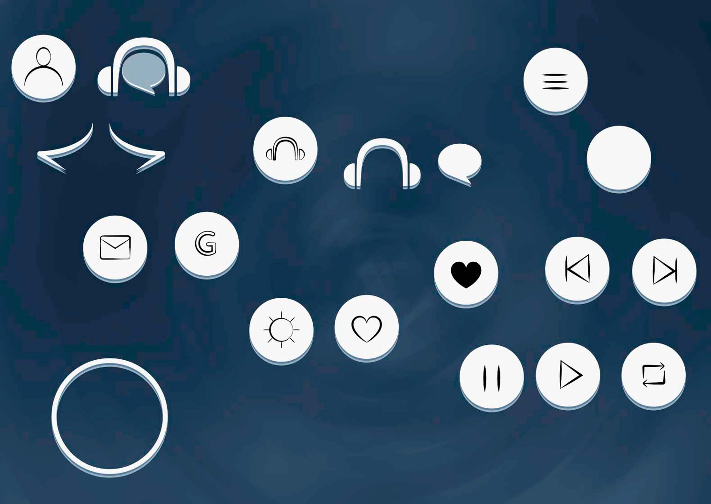
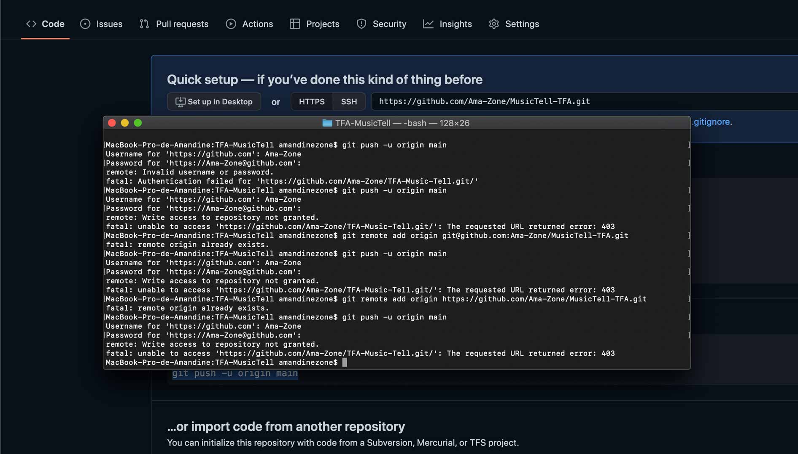

Case study
Ce projet est le résultat de nombreuses heures de réflexion. De nombreuses idées sont tombées à l’eau, mais après de nombreux conseils ce projet à été réalisé.
Quel est le problème ?
Peu d’ado/jeune adulte vont d’eux même écouter de la musique “classique”, on n’entend pas souvent ce genre de musique à la radio, dans des magasins.
Le nom de la galère
Le nom a été l’une des étapes les plus dures. J’ai essayé de combiner « do ré mi fa sol la si do » pour former un nom, mais rien ne fonctionnait. J’ai aussi essayé un nom avec « anecdote » mais je trouve que ce mot n’est pas facile à prononcer, il fallait donc un synonyme. J’ai choisi le mot « conte » ou « raconter » (en anglais = tale/tell) puis j’ai ajouté le mot « musique » (= music). Finalement, cela donne “Music & Tell”.

Le logo de la joie
Le logo était assez simple à trouver et à faire. Le premier que j’ai imaginé était une note de musique croisée avec une plume : mauvaise idée. C’est ma deuxième idée qui fut la bonne : un casque pour la musique et une bulle de dialogue pour les anecdotes. L'ensemble représente donc mon projet : l’union de la musique en lisant des anecdotes.
L’enfer de github
J’ai repris le style que j’ai utilisé pour mon logo. j’ai dupliqur 2 fois l’aplat de couleur, puis les déscendre un tout petit peu pour donné une petit illusion de relief. Et j’utilise ce procédé pour toutes mes icônes.
Les couleurs de la tristesse
Quand je pense à la musique « classique » je pense au bleu foncé pour le calme et pour certaine composition la tristesse. Pour ne pas que le fond soit plat, j’ai créé un fond, d’abord dans illustrator puis je l’ai amélioré dans photoshope.
L’enfer de github
Mon MacBook déteste github, après des jours de galère à essayer de faire le premier commit. J’ai finalement abandonné pour demander de l’aide à Pina qui m’a aidée à résoudre mon problème. Finalement j’ai réussi à faire mes commits sur github.
